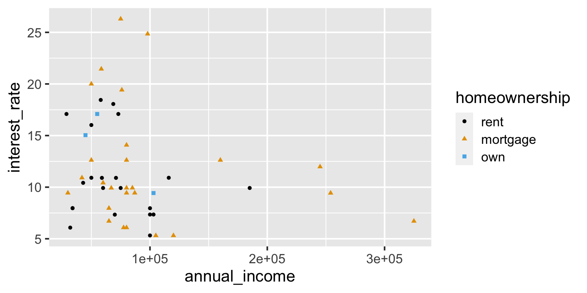
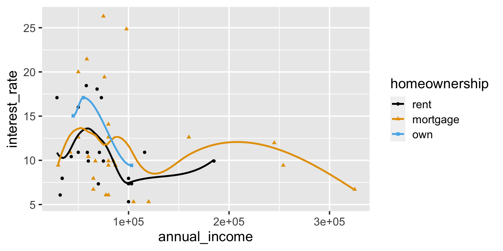
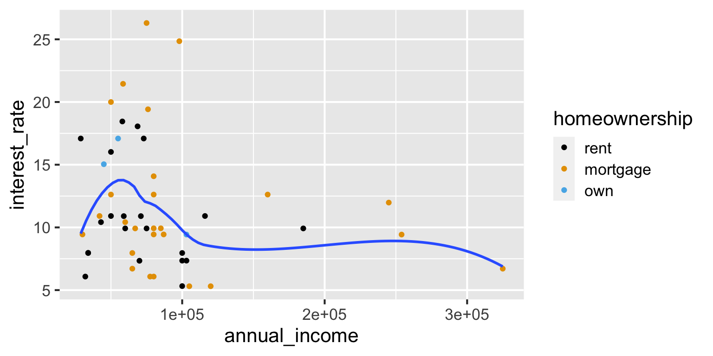
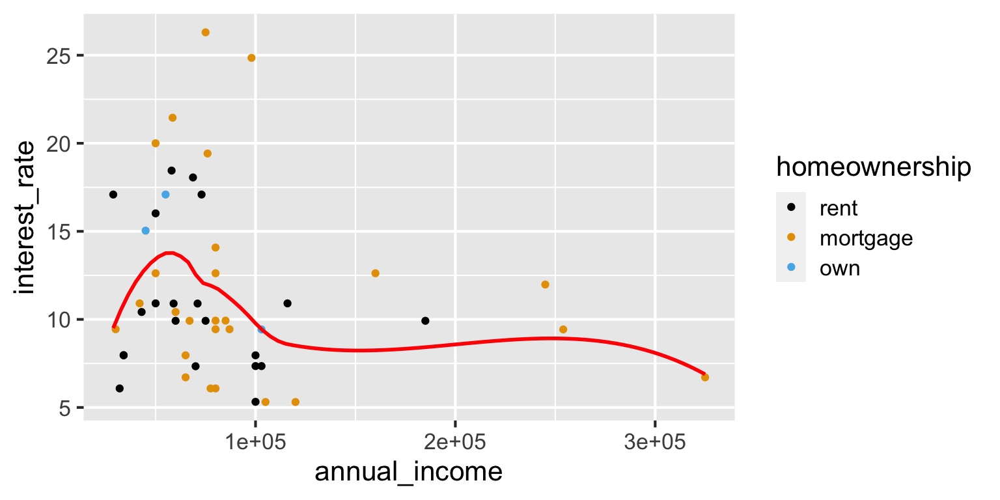
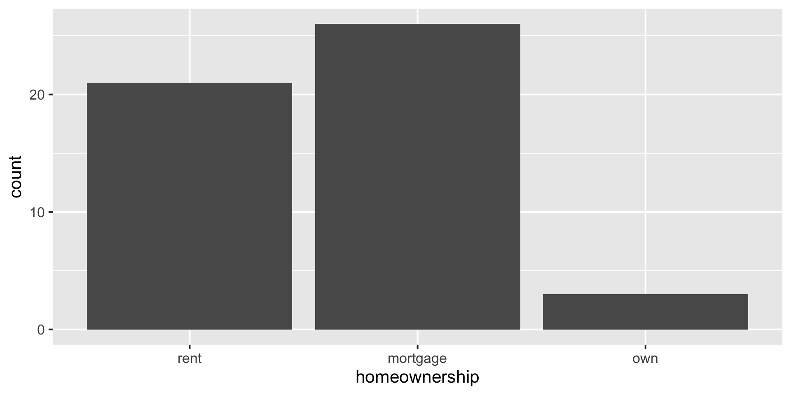
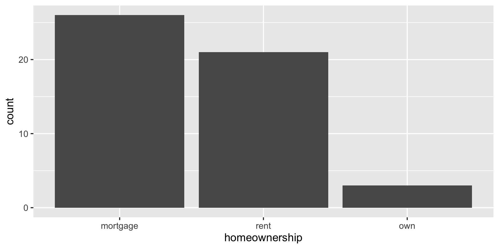

library(tidyverse)
library(openintro)Exam 1 review
Lecture 9
Warm up
While you wait for class to begin…
Questions for/about the exam?
Packages
Announcements
Exam format / flow
Academic dishonesty / Duke Community Standard
Type coercion
Explicit vs. implicit type coercion
Explicit type coercion: You ask R to change the type of a variable
Implicit type coercion: R changes / makes assumptions for you about the type of a variable without you asking for it
- This happens because in a vector, you can’t have multiple types of values
Vectors
A vector is a collection of values
Atomic vectors can only contain values of the same type
Lists can contain values of different types
Why do we care? Because each column of a data frame is a vector.
. . .
Explicit coercion
✅ From numeric to character
Explicit coercion
❌ From character to numeric
Implicit coercion
Which of the column types were implicitly coerced?
Collecting data
Suppose you conduct a survey and ask students their student ID number and number of credits they’re taking this semester. What is the type of each variable?
. . .
Cleaning data
survey <- survey_raw |>
mutate(
student_id = if_else(student_id == "I don't remember", NA, student_id),
n_credits = case_when(
n_credits == "I'm not sure yet" ~ NA,
n_credits == "2 - underloading" ~ "2",
.default = n_credits
),
n_credits = as.numeric(n_credits)
)
survey# A tibble: 4 × 2
student_id n_credits
<chr> <dbl>
1 273674 4
2 298765 4.5
3 287129 NA
4 <NA> 2 Cleaning data – alternative
survey <- survey_raw |>
mutate(
student_id = parse_number(student_id),
n_credits = parse_number(n_credits)
)Warning: There were 2 warnings in `mutate()`.
The first warning was:
ℹ In argument: `student_id = parse_number(student_id)`.
Caused by warning:
! 1 parsing failure.
row col expected actual
4 -- a number I don't remember
ℹ Run `dplyr::last_dplyr_warnings()` to see the 1 remaining warning.# A tibble: 4 × 2
student_id n_credits
<dbl> <dbl>
1 273674 4
2 298765 4.5
3 287129 NA
4 NA 2 Recap: Type coercion
If variables in a data frame have multiple types of values, R will coerce them into a single type, which may or may not be what you want.
If what R does by default is not what you want, you can use explicit coercion functions like
as.numeric(),as.character(), etc. to turn them into the types you want them to be, which will generally also involve cleaning up the features of the data that caused the unwanted implicit coercion in the first place.
Aesthetic mappings
openintro::loan50
loan50 |>
select(annual_income, interest_rate, homeownership)# A tibble: 50 × 3
annual_income interest_rate homeownership
<dbl> <dbl> <fct>
1 59000 10.9 rent
2 60000 9.92 rent
3 75000 26.3 mortgage
4 75000 9.92 rent
5 254000 9.43 mortgage
6 67000 9.92 mortgage
7 28800 17.1 rent
8 80000 6.08 mortgage
9 34000 7.97 rent
10 80000 12.6 mortgage
# ℹ 40 more rowsAesthetic mappings
What will the following code result in?
ggplot(
loan50,
aes(x = annual_income, y = interest_rate, color = homeownership, shape = homeownership)
) +
geom_point() +
scale_color_colorblind()Aesthetic mappings
ggplot(
loan50,
aes(x = annual_income, y = interest_rate, color = homeownership, shape = homeownership)
) +
geom_point() +
scale_color_colorblind()
Global mappings
What will the following code result in?
ggplot(
loan50,
aes(x = annual_income, y = interest_rate, color = homeownership, shape = homeownership)
) +
geom_point() +
geom_smooth(se = FALSE) +
scale_color_colorblind()Global mappings
ggplot(
loan50,
aes(x = annual_income, y = interest_rate, color = homeownership, shape = homeownership)
) +
geom_point() +
geom_smooth(se = FALSE) +
scale_color_colorblind()
Local mappings
What will the following code result in?
ggplot(
loan50,
aes(x = annual_income, y = interest_rate)
) +
geom_point(aes(color = homeownership)) +
geom_smooth(se = FALSE) +
scale_color_colorblind()Local mappings
ggplot(
loan50,
aes(x = annual_income, y = interest_rate)
) +
geom_point(aes(color = homeownership)) +
geom_smooth(se = FALSE) +
scale_color_colorblind()
Mapping vs. setting
What will the following code result in?
ggplot(
loan50,
aes(x = annual_income, y = interest_rate)
) +
geom_point(aes(color = homeownership)) +
geom_smooth(color = "red", se = FALSE) +
scale_color_colorblind()Mapping vs. setting
ggplot(
loan50,
aes(x = annual_income, y = interest_rate)
) +
geom_point(aes(color = homeownership)) +
geom_smooth(color = "red", se = FALSE) +
scale_color_colorblind()
Recap: Aesthetic mappings
Aesthetic mapping defined at the global level will be used by all
geoms for which the aesthetic is defined.Aesthetic mapping defined at the local level will be used only by the
geoms they’re defined for.
Aside: Legends
ggplot(
loan50,
aes(x = annual_income, y = interest_rate, color = homeownership, shape = homeownership)
) +
geom_point() +
scale_color_colorblind()
Aside: Legends
Aside: Legends
Factors
Factors
Factors are used for categorical variables – variables that have a fixed and known set of possible values.
They are also useful when you want to display character vectors in a non-alphabetical order.
Bar plot
ggplot(loan50, aes(x = homeownership)) +
geom_bar()
Bar plot - reordered
loan50 |>
mutate(homeownership = fct_relevel(homeownership, "mortgage", "rent", "own")) |>
ggplot(aes(x = homeownership)) +
geom_bar()
Frequency table
loan50 |>
count(homeownership)# A tibble: 3 × 2
homeownership n
<fct> <int>
1 rent 21
2 mortgage 26
3 own 3Bar plot - reordered
loan50 |>
mutate(homeownership = fct_relevel(homeownership, "own", "rent", "mortgage")) |>
count(homeownership)# A tibble: 3 × 2
homeownership n
<fct> <int>
1 own 3
2 rent 21
3 mortgage 26Under the hood
class(loan50$homeownership)[1] "factor". . .
typeof(loan50$homeownership)[1] "integer". . .
levels(loan50$homeownership)[1] "rent" "mortgage" "own" . . .
str(loan50$homeownership) Factor w/ 3 levels "rent","mortgage",..: 1 1 2 1 2 2 1 2 1 2 ...Recap: Factors
The forcats package has a bunch of functions (that start with
fct_*()) for dealing with factors and their levels: https://forcats.tidyverse.org/reference/index.htmlFactors and the order of their levels are relevant for displays (tables, plots) and they’ll be relevant for modeling (later in the course)
factoris a data class
Aside: ==
loan50 |>
mutate(homeownership_new = if_else(homeownership == "rent", "don't own", homeownership)) |>
distinct(homeownership, homeownership_new)# A tibble: 3 × 2
homeownership homeownership_new
<fct> <chr>
1 rent don't own
2 mortgage mortgage
3 own own Aside: |
loan50 |>
mutate(homeownership_new = if_else(homeownership == "rent" | homeownership == "mortgage", "don't own", homeownership)) |>
distinct(homeownership, homeownership_new)# A tibble: 3 × 2
homeownership homeownership_new
<fct> <chr>
1 rent don't own
2 mortgage don't own
3 own own Aside: |
loan50 |>
mutate(homeownership_new = if_else(homeownership %in% c("rent", "mortgage"), "don't own", homeownership)) |>
distinct(homeownership, homeownership_new)# A tibble: 3 × 2
homeownership homeownership_new
<fct> <chr>
1 rent don't own
2 mortgage don't own
3 own own